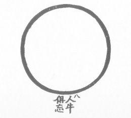

THE RATIONAL MIND
Man’s rational mind, the instrument with which he can think about things, has given him great power. This power he has used primarily to increase his potential for survival, to increase his pleasure or sensual gratification, and to enhance his ego through mastery or control of his environment. To visit one of the great cities of the world, to see a television image in your own home of the first man to set foot on the moon, to study the complexities of existing civilizations, cannot but fill one with awe as to the manifestations of the rational mind. And yet at the same time, to see the horror of urban living with its pollution and tensions, to see war and killing, to see the runaway imbalances in ecology, to study the statistics about neurosis and tranquilizers and crime and highway fatalities, cannot but lead one to wonder whether man’s rational mind is enough.
The answer is that it is not. In an evolutionary perspective, the rational mind takes us a certain distance and no further, and we must be able to transcend it, to go on to other ways, other vehicles, if we are to cross the great ocean.
“A new type of thinking is essential if mankind is to survive and move towards higher levels.”—A. Einstein
If you sense the limitations of a specific tool you do not necessarily throw the tool away. You first explore whether there is a way of using this very powerful tool in such a way as to develop a better tool or vehicle. That is, can you use the rational mind to transcend itself? The answer is yes. And the technique is known as jnana yoga, or the path of knowledge arrived at through reasoning and discrimination.
As with the use of sexual energies in sadhana, using the rational mind is making use of great powers which can lead to freedom or to greater enslavement. To understand the risk involved in jnana yoga you need to reflect upon the precise limit of the rational mind. The rational mind functions by separating subject from object, that is, the knower from the known. It works with data derived from the senses and the associative processes of the intellect (the memory). It works by analysis, a systematic processing technique that is based on the laws of logic.
Its limitations are that it cannot handle paradoxical or illogical information (e.g., that points at the opposite ends of a continuum are the same point, or that something can be “a” and “not a” at the same time) and that it cannot know that which can only be experienced subjectively.
It is interesting that in the autobiographical accounts of the great breakthroughs in man’s understanding of the universe, the role of intuition, or some mysterious comprehension, led to the breakthrough rather than any systematic analytic process.
“I didn’t arrive at my understanding of the fundamental laws of the universe through my rational mind.”—A. Einstein
William James, the philosopher, pointed to other types of consciousness, or ways of knowing which are: (a) discontinuous with our rational mind, and (b) screened from us by the veil of our attachment to our rational mind. And he cautioned man against prematurely closing his accounts with reality before he had incorporated these other ways of knowing.
Now if you very dispassionately understand all the above, as well as understanding the truth of yoga, or union, and if you understand the essence of the fundamental truth that it is attachment that keeps man caught in the illusion of separateness, you begin to understand more and more of the way in which the universe functions. And with such study comes further discrimination, a further understanding and transcending of your own desires and thus a deeper and broader understanding of “how it all is.” This is known as the work of the “causal plane” and is connected with the sixth chakra (the energy focal center located behind point between the eyebrows).
Finally you come to a point where you almost know it all. You are very wise. You are very pure . . . except for the fact that you may well have gotten caught in the last trap . . . the desire to know it all and still be you, “the knower.” This is an impossibility. For all of the finite knowledge does not add up to the infinite. In order to take the final step, the knower must go. That is, you can only BE it all, but you can’t know it all. The goal is non-dualistic—as long as there is a “knower” and “known” you are in dualism.
“There is only ONE GOD, and none else besides.”—Old Testament
Many of the greatest minds in history have gotten caught in this trap of wanting to be God and at the same time to retain their separate identity. They are caught because they still have energy attached to the third chakra, the desire for ego power. And to be God is obviously the ultimate power trip.
In order to avoid this pitfall associated with jnana yoga, tremendous discipline is necessary. In Zen Buddhism, the relationship of the koan (the exercises in thought which confound the rational mind) to zazen (formal meditation) is an example of such discipline.
Exercises
One of the techniques used extensively in India was expounded by Ramana Maharshi and is called Vichara Atma (Who Am I?). It is a method for turning the mind in upon itself to first know its true nature and then to be its true nature. The method is technically simple, though extremely difficult to execute.
(1) You ask yourself, “Who am I?” Then step by step, in a systematic fashion, you proceed to dissociate yourself from all the elements you previously identified as “I.”
(2) You answer, “I am not my torso or body.” Then you attempt to experience yourself as separate from your body. It is helpful to some people at the outset to place the “I” in the middle of the head and then see it as separate from the other parts to be set forth.
(3) Then you say, “I am not the five organs of motion: the arms, the legs, the tongue, the sphincter, the genitals.” As you say each of these, experience your “I” as separate from that part of the body.
(4) Then you say, “I am not the five organs of sense: the eyes, the ears, the nose, the mouth, the skin.” Again, stop with each and experience it as separate from “I.”
(5) Then say, “I am not the five internal organs: the organs of respiration, digestion, excretion, circulation, perspiration.” Again you stop with each of these sets of organs, attempt to experience the organ or to imagine its functioning, and then proceed to experience “I” as separate from that organ.
(6) If you have carried out the above instructions exactly, the only thing that is left are your thoughts. And, thus, the final step is to say “I am not these thoughts.” Now the exquisite difficulty at this point is that the thought of “I” which you originally placed in the middle of your head is also (and specifically) a thought which you are not. So even the thought of “I” must go . . . It’s a little like climbing out on the farthest branch of a tree and then cutting off the branch.
“The inert body does not say ‘I.’ Reality-Consciousness does not emerge. Between the two, and limited to the measure of the body, something emerges as ‘I.’ It is that that is known as Chit-jada-granthi (the knot between the conscious and the inert), and also as bondage, soul, subtle body, ego samsara, mind, and so forth.”—Ramana Maharshi
If you have sufficient discipline of mind to carry this exercise through to completion, you have entered into the realm of SAT CHIT ANANDA (Reality-Consciousness) . . . your True Self . . . where there is only ONE.
Potent Quotes
“What can’t be said can’t be said, and it can’t be whistled either.”—Ram Tirtha
“All that the imagination can imagine and the reason conceive and understand in this life is not, and cannot be, a proximate means of union with God.”—St. John of the Cross
“ . . . because the mind of the flesh is enmity against God.”—Paul of Tarsus
“All that is made seems planless to the darkened mind, because there are more plans than it looked for. So with the Great Dance. Set your eyes on one movement and it will lead you through all patterns and it will seem to you the master movement. But the seeming will be true. Let no mouth open to gainsay it. There seems no plan because it is all plan: there seems no center because it is all center. Blessed be He . . .”—C.S. Lewis, Perelandra
“Kill therefore with the sword of wisdom the doubt born of ignorance that lies in thy heart. Be one in self-harmony, in Yoga, and arise, great warrior, arise.”—Bhagavad Gita
“Have patience, Candidate, as one who fears no failure, courts no success. Fix thy soul’s gaze upon the star whose ray thou art, the flaming star that shines within the lightless depths of ever-being.”—Blavatsky
“Allegiance to the void implies denial of its Voidness
The more you talk about it, the more you think about it,
the further from it you go.
Stop talking, stop thinking, and there is nothing you will not understand.
Return to the root and you will find the meaning
Pursue the light, and you lose its source.
Look inward and in a flash you will conquer the apparent and the void.
All come from mistaken views
There is no need to seek truth, only stop having views.”—Seng T’san
“A student once asked Joshu:
‘If I haven’t anything in my mind, what shall I do?’
Joshu replied: ‘Throw it out.’
‘But if I haven’t anything how can I throw it out?’ the student continued.
Said Joshu, ‘Well, then, carry it out’.”—Reps
“Our existence as embodied beings is purely momentary; what are a hundred years in eternity? But if we shatter the chains of egotism, and melt into the ocean of humanity, we share its dignity. To feel that we are something is to set up a barrier between God and ourselves; to cease feeling that we are something is to become one with God.”—Gandhi
“Cease to seek after God as without thee
And the universe and things similar to these.
Seek him from out of thyself and learn who it is
Who once and for all appropriateth all in thee
Unto Himself.
And say, My God, My Mind, My Reason, My Soul, My Body, and learn whence is Sorrow and Joy and Love and Hate, and waking though one would not, and sleeping though one would not, and falling in love though one would not. And if thou shouldst closely investigate these things, thou wilt find Him in thyself, one and many, just as the atom. Thus finding, from thyself, a way out of thyself.”—Manoimus the Heretic
“Make your will one! Don’t listen with your ears, listen with your mind. No, don’t listen with your mind, but listen with your spirit. Listening stops with the ears, the mind stops with recognition, but the spirit is empty and waits on all things. The Way gathers in emptiness alone. Emptiness is the fasting of the mind. It is easy to keep from walking; the hard thing is to walk without touching the ground.”—Chuang Tzu
“If therefore thine eye be single, the whole body shall be full of light.”—Jesus
“That which sees through the eye but whom the eye sees not; that is the Atman.”—Mundaka Upanishad
“The Self is the witness, all-pervading, perfect, free, one, consciousness, actionless, not attached to any object, desireless, ever-tranquil. It appears through illusion as the world.”—Ashtavakra Gita
“If it is said that Liberation is of three kinds, with form or without form, then let me tell you that the extinction of the three forms of Liberation is the only true Liberation.”—Ramana Maharshi
“Who realizes what? That is realization.”—Hari Dass Baba
“May all beings realize the ecstatic transparency of their own minds.”—Karma LoTsu
